화학분석기사(구) (2013-03-10 기출문제)
1과목: 일반화학
1. 납 원자 2.55×1023개의 질량은 약 몇 g인가? (단, 납의 원자량은 207.2이다.)
- 48.8
- 87.8
- 488.2
- 878.8
(정답률: 87%)

2. 25℃에서 용해도곱 상수(Ksp)가 1.6×10-5d일 때, 염화 납(Ⅱ)(PbCl2)의 용해도(mol/L)는 얼마인가?
- 1.6×10-2
- 0.020
- 7.1×10-5
- 2.1
(정답률: 74%)
3. 탄화수소 화합물에 대한 설명으로 틀린 것은?
- 탄소-탄소 결합이 단일결합으로 모두 포화된 것을 alkane이라 한다.
- 탄소-탄소 결합에 이중결합이 있는 탄화수소 화합물은 alkene이라 한다.
- 탄소-탄소 결합에 삼중결합이 있는 탄화수소 화합물은 alkyne이라 한다.
- 가장 간단한 alkyne 화합물은 프로필렌(C3H4)이다.
(정답률: 91%)
4. 철근이 녹이 슬 때 질량은 어떻게 되겠는가?
- 녹슬고 전과 질량 변화가 없다.
- 녹슬기 전에 비해 질량이 증가한다.
- 녹이 슬면서 일정 시간 질량이 감소하다가 일정하게 된다.
- 녹슬기 전에 비해 질량이 감소한다.
(정답률: 87%)
5. 다음 방향족 화합물 구조의 명칭에 해당하는 것은?
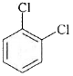
- ortho-dichlorobenzene
- meta-dichlorobenzene
- paea-dichlorobenzene
- delta-dichlorobenzene
(정답률: 94%)
6. 다음 중 흡열 반응이 아닌 것은?
- 자동차 엔진에서 가솔린의 연소
- 뜨거운 표면 위에서 물의 증발
- 드라이아이스가 기체 이산화탄소로 승화
- 얼음이 녹아 물로 바뀜
(정답률: 83%)
7. 몰농도(M. molarity)의 정의로 옳은 것은?
- 용매 1L중에 녹아 있는 용질의 몰수
- 용액 1L중에 녹아 있는 용질의 몰수
- 용매 1kg중에 녹아 있는 용질의 몰수
- 용액 1L중에 녹아 있는 용매의 몰수
(정답률: 84%)
8. 다음의 산화환원반응식에 대한 설명 중 틀린 것은?
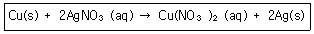
- 산화수 0의 구리(Cu)는 반응 후에 +2로 산화수가 증가하였다.
- 구리(Cu)는 전자 2개를 얻어 산화된다.
- 은이온(Ag+)은 산화수가 +1에서 반응 후에는 0의 산화수를 갖는다.
- 2개의 은이온(Ag+)은 각각 1개씩 전자를 얻어 환원된다.
(정답률: 88%)
9. 다음 중 산의 세기가 가장 강한 것은?
- HCIO
- HF
- CH3COOH
- HCl
(정답률: 79%)
10. 어떤 상태에서 탄소(C)의 전자 배치가 1s22s22px2로 나타났다. 이 전자배치에 대하여 옳게 설명한 것은?
- 들뜬 상태, 짝짓지 않은 전자 존재
- 들뜬 상태, 전자는 모두 짝지었음
- 바닥 상태, 짝짓지 않은 전자 존재
- 바닥 상태, 전자는 모두 짝지었음
(정답률: 86%)
11. 이온반지름의 크기를 잘못 비교한 것은?
- Mg2+＞Ca2+
- F-＜02-
- Al3+＜Mg2+
- 02-＜S2-
(정답률: 86%)
12. KMnO4에서 Mn의 산화수는 얼마인가?
- 4
- 5
- 6
- 7
(정답률: 95%)
13. 화합물 5.325g은 탄소 3.758g, 수소 0.316g, 산소 1.251g으로 이루어져 있다. 이 화합물의 실험식을 옳게 나타낸 것은?
- C2H4O
- CH2O
- C4H4O
- C6H6O
(정답률: 88%)
14. 메탄 4g은 몇 몰(mol)인가?
- 0.125 몰
- 0.25 몰
- 0.5 몰
- 4.0 몰
(정답률: 93%)
15. 다음 산의 명명법으로 옳은 것은?
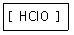
- 염소산
- 아염소산
- 과염소산
- 하이포아염소산
(정답률: 93%)
16. 아세트산, 아세틸렌, 에탄, 에틸알코올 중 화합물 내 탄소의 함량(질량 %)이 감소하는 순서로 배열한 것은?
- 아세틸렌＞에탄＞에틸알코올＞아세트산
- 에탄＞아세틸렌＞에틸알코올＞아세트산
- 아세트산＞에틸알코올＞에탄＞아세틸렌
- 에틸알코올＞아세트산＞아세틸렌＞에탄
(정답률: 76%)
17. 다음 중 실험식이 다른 것은?
- CH2O
- C2H6O2
- C6H12O6
- C3C6O3
(정답률: 92%)
18. 원자 내에서 전자는 불연속적인 에너지 준위에 따라 배치된다. 이러한 주에너지 준위 중에서 전자가 분포할 확률을 나타낸 공간을 무엇이라 부르는가?
- 원자핵
- Lewis 구조
- 전위(potential)
- 궤도함수
(정답률: 92%)
19. 다음 중 질량 백분율(mass percentage)에 대한 설명으로 옳은 것은?
- (용질의 질량/용액의 질량)×102
- (용질의 질량/용매의 질량)×102
- (용질의 질량/용액의 몰수)×102
- (용질의 질량/용매의 몰수)×102
(정답률: 86%)
20. 티오시아네이트(Thiocyanate) 이온(SCN-)의 전자구조를 옳게 나타낸 것은?

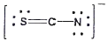


(정답률: 88%)
2과목: 분석화학
21. 진한 황산의 무게 백분율 농도는 96%이다. 진한 황산의 몰농도는 얼마인가? (단, 진한 황산의 밀도는 1.84kg/L, 황산의 분자량은 98.08g/mol이다.)
- 9.00M
- 12.0M
- 15.0M
- 18.0M
(정답률: 84%)
22. 메틸아민(Methylamine)은 약한 염기로 염해리상수(Kb)값은 다음과 같은 평형식에서 구할 수 있다. Kb값을 구하기 위한 표현식으로 옳은 것은?
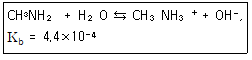
- [CH3NH3+]/[CH3NH2]
- [CH3NH2]/([CH3NH3+][OH-])
- ([CH3NH3+][OH-])/[CH3NH2]
- [CH3NH3+]/([CH3NH2][H+])
(정답률: 72%)
23. 금이 왕수에서 녹을 때 미량의 금이 산화제인 질산에 의해 이온이 되어 녹으면 염소 이온과 반응해서 제거되면서 계속 녹는다. 이 때 금 이온과 염소 이온 사이의 반응은?
- 산화-환원
- 침전
- 산-염기
- 착물형성
(정답률: 76%)
24. 활동도계수(Activity Coefficient)에 대한 설명으로 옳은 것은?
- 이온의 크기가 같을 때 이온세기(ionic strength)가 증가하면 활동도계수는 증가한다.
- 이온의 크기가 같을 때 이온의 전하가 증가하면 활동도 계수는 증가한다.
- 이온의 전하가 같을 때 수화된(hydrated) 이온 크기가 증가하면 활동도계수는 증가한다.
- 이온의 농도가 묽은 용액일수록 활동도계수는 1보다 커진다.
(정답률: 43%)
25. 표준 수소 전극에서의 반응 및 표준 전위(E°)를 가장 옳게 나타낸 것은? (단, A는 각 성분의 활동도이다.)
- 2H+(A=1)+2e-⇆H2(A=2) E°=0.0V
- 2H+(A=2)+2e-⇆H2(A=1) E°=1.0V
- 2H+(A=1)+2e-⇆H2(A=1) E°=0.0V
- 2H+(A=2)+2e-⇆H2(A=2) E°=1.0V
(정답률: 83%)
26. 산화ㆍ환원 적정에서 사용되는 KMnO4에 대한 설명으로 틀린 것은?
- 진한 자주색을 띤 산화제이다.
- 매우 안정하여 일차표준물질로 사용된다.
- 쎈 산성용액에서 무색의 Mn2+로 환원된다.
- 산성용액에서 자체지시약으로 작용한다.
(정답률: 79%)
27. 표준전극전위, E°에 대한 다음 설명 중 틀린 것은?
- 반쪽반응의 표준전극전위는 온도의 영향을 받는다.
- 표준전극전위는 균형 맞춘 반쪽반응의 반응물과 생성물의 몰수와 관계가 있다.
- 반쪽반응의 표준전극전위는 전적으로 환원반응의 경우로만 나타난다. 즉, 상태환원전위가 된다.
- 표준전극전위는 산화전극 전위를 임의로 0.000V로 정한 표준수소전극인 화학전지의 전위라는 면에서 상대적인 양이다.
(정답률: 63%)
28. 암모니아의 존재 하에서 Zn2+용액을 EDTA로 적정하였다. 이 조건에서 유리 금속 이온의 분율은 1.8×10-5이고 Zn2+-EDTA 형성상수는 3.16×1016 이다. pH 10.0과 11.0일 대의 EDTA Y4-의 분율은 0.36과 0.85이다. 용액의 pH가. 10.0일 때 당량점에서의 Zn2+의 농도가 1.0×10-14M이었다면, 용액의 pH가 11.0일 때 당량점에서의Zn2+의 농도는?
- 2.36×10-14M
- 8.50×10-15M
- 4.23×10-15M
- 3.60×10-15M
(정답률: 42%)
29. CH3COO-/CH3COOH 완충용액의 pH가 4.98이고, 이 때 [CH3COO-]=0.1M이다. 이 용액 200mL에 0.1M NaOH 용액 10mL를 가한 후의 완충용액의 pH는 얼마인가? (단, CH3COOH의 Ka=1.75×10-5이다.)
- 4.98
- 5.04
- 5.98
- 6.04
(정답률: 42%)
30. 칼슘이온 Ca2+을 무게분석법을 활용하여 정량하고자 한다. 이 때 효과적으로 사용할 수 있는 음이온은?
- C2O42-
- CO42-
- Cl-
- SCN-
(정답률: 78%)
31. 부피분석방법 중 하나인 적정법에서 이용되는 화학반응이 가져야 할 조건으로 가장 거리가 먼 것은?
- 측정되는 성분화학종은 표준시약과 화학양론적으로 반응하여야 한다.
- 반응이 정량적으로 진행되며, 역반응이 일어나지 않아야 한다.
- 반응속도가 느려야 한다.
- 반응의 종말점은 외부에서 명확하게 인정할 수 있어야 한다.
(정답률: 85%)
32. 0.850g의 미지시료에는 KBr(몰 질량 119g)과 KNO3(몰 질량 101g) 만이 함유되어 있다. 이 시료를 물에 용해한 후 브롬화물을 완전히 적정하는데 0.⑤00M AgNO3 80.0mL가 필요하였다. 이 때 고체시료에 있는 KBr의 무게백분율은?
- 44.0%
- 47.5%
- 54.1%
- 56.0%
(정답률: 62%)
33. HgS는 산성과 알칼리성 H2S 용액 모두에서 침전되고, ZnS는 알칼리성 H2S 용액서만 침전된다. 이로부터 용해도곱 상수의 크기에 대하여 알 수 있는 것은?
- HgS가 더 작다.
- ZnS가 더 작다.
- 같다.
- 알 수 없다.
(정답률: 69%)
34. 프탈산의 K1=1.12×10-3이고, K2=3.90×10-6이다. 0.⑤0M 프탈산 30.0mL를 0.10M NaOH로 적정하였다. NaOH를 30.0mL 가했을 때의 pH는?
- 3.90
- 5.90
- 7.0
- 8.90
(정답률: 32%)
35. 옥살산(H2C2O4)은 뜨거운 산성용액에서 과망간산 이온(MnO4-)과 다음과 같이 반응한다. 이 반응에서 지시약 역할을 하는 것은?
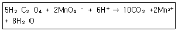
- H2C2O4
- MnO4-
- CO2
- H2O
(정답률: 88%)
36. 해리 평형상수가 1.0×10-5인 약산이 있다. 이 약산의 농도가 0.10M일 때의 해리분율(fraction of dissociation)은?
- 1.0%
- 2.0%
- 5.0%
- 10.0%
(정답률: 58%)
37. 옥살산나트륨의 제조 과정에 대한 설명으로 틀린 것은?
- KMnO4 용액을 표준화하기 위해 옥살산나트륨(Ma2C2O4, 134.00g/mol) 0.3562g을 250.0mL 부피 플라스크에 녹여 만들었다. 옥살산 농도는 0.01063M이다.
- 옥살산(C2O4-) 5mol은 MnO4- 2mol과 반응한다.
- 0.01063M Na2C2O4 10.00mL와 반응하는 KMnO4 몰수는 0.04252mmol이다.
- 0.01063M Na2C2O4 10.00mL와 반응하는 KMnO4량이 48.36mL이면 KMnO4의 농도는 0.008792M이다.
(정답률: 50%)
38. 다음은 Potassium tartrate의 용해도가 첨가물의 농도에 따라 어떻게 변화되는가를 나타내는 그림이다. 그림의 (a), (b), (c)는 각각 어떤 첨가물로 예상할 수 있는가? (단, 첨가물의 종류는 MaCl, Glucose, KCl이다.)
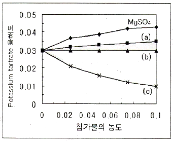
- (a) NaCl, (b) Glucose, (c) KCl
- (a) NaCl, (b) KCl, (c) Glucose
- (a) KCl, (b) NaCl, (c) GlucoseKCl
- (a) Glucosel, (b) KCl, (c) NaCl
(정답률: 87%)
39. 완충용액을 다루는 주된 식은 Handerson-Hasselbalch 식으로서, 이 식을 활용하면 완충용액의 pH값을 용액의 조성으로부터 쉽게 예상할 수 있다. 약산 HA와 그 짝염기 A-로 구성된 완충용액의 Handerson-Hasselbalch식을 바르게 나타낸 것은?
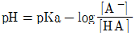
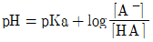
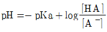
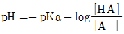
(정답률: 82%)
40. 농도(Concentration)에 대한 설명으로 옳은 것은?
- 몰랄 농도[m]는 온도에 따라 변하지 않는다.
- 몰랄 농도는 용액 1kg 중 용질의 몰수이다.
- 몰 농도[M]는 용액 1kg 중 용질의 몰수이다.
- 몰 농도는 온도에 따라 변하지 않는다.
(정답률: 84%)
3과목: 기기분석I
41. 불꽃 원자분광법에서 휘발성이 낮은 화학종의 생성에 의한 방해를 줄일 수 있는 방법이 아닌 것은?
- 가능한 한 높은 온도의 불꽃을 사용한다.
- 해방제를 사용한다.
- 복사선 완충제를 사용한다.
- 보호제를 사용한다.
(정답률: 64%)
42. X-선의 회절에 이용되는 대표적인 법칙은?
- Bragg 법칙
- Raman 법칙
- Beer 법칙
- Hunt 법칙
(정답률: 85%)
43. 적외선 분광법에서 1600~1700cm-1 근처에서 강한 피크와 3000cm-1 근처에서 넓고 강한 피크를 갖고 있는 스펙트럼을 얻었다. 다음 중 가능성이 가장 높은 화합물은?
- C6H5CH3
- CH3COCH3
- CH3COOH
- CH3OH
(정답률: 70%)
44. Bi(Ⅲ)와 티오우레아간에 형성된 착물을 포함하는 용액은 470nm에서 9.32×103Lmol-1cm-1의 몰흡광계수를 가진다. 1.0cm 용기에서 6.24×10-5M 용액의 흡광도는 얼마인가?
- 0.382
- 0.482
- 0.582
- 0.682
(정답률: 83%)
45. 원자 흡수법에서 사용되는 보호제(protective agent)의 목적으로 사용되는 시약으로만 나열된 것은?
- EDTA, 8-hydroxyqinoline, APDC
- EDTA, APDC, 해방제
- EDTA, 8-hydroxyqinoline, 해방제
- 8-hydroxyqinoline, APDC, 해방제
(정답률: 66%)
46. 양성자와 13C 원자사이에 짝풀림을 하는 여러 가지 방법이 있다. 13C NMR에 이용하는 짝풀림이 아닌 것은?
- 넓은 띠 짝풀림
- 공명 비킴 짝풀림
- 펄스 배합 짝풀림
- 자기장 잠금 짝풀림
(정답률: 65%)
47. 이산화탄소 분자는 모두 몇 개의 기준진동방식을 가지는가?
- 3
- 4
- 5
- 6
(정답률: 80%)
48. 기기분석에서 분석 신호는 화학적 잡음과 기기적 잡음의 영향을 받는다. 다음 중 기기적 잡음에 속하지 않는 것은?
- 산탄(shot) 잡음
- 열적(thermal) 잡음
- 깜박이(flicker) 잡음
- 열역학적(thermodynamic) 잡음
(정답률: 84%)
49. 유도결합플라스마 토치에 시료를 도입하는 방법이 아닌 것은?
- 압력주입법
- 교차흐름 분무기법
- 초음파 분무기법
- 전열 증가화법
(정답률: 54%)
50. X-선 분광법에 사용되는 광원이 아닌 것은?
- 방사성동위원소
- X-선 관
- 2차 형광 광원
- 전극 없는 방전등
(정답률: 71%)
51. 레이저 발생 원리에 따르면 세 단계 준위보다 네 단계 준위 레이저가 더 효율적이다. 이와 관련이 있는 원리는?
- 자발 방출
- 흡수
- 분포상태반전
- 펌핑
(정답률: 49%)
52. 불꽃 및 전열법과 비교한 ICP 원자화 방법의 특징에 대한 설명으로 틀린 것은?
- 자체흡수와 자체반전 효과가 작다.
- ㅏ 이온화에 의한 방해효과가 작다.
- 저렴한 장비를 사용하고 유지비가 적게 든다.
- 텅스텐, 우라늄, 지르코늄 등의 원자화가 용이하다.
(정답률: 88%)
53. UV-Vos 흡수 분광법에서 용매의 선정은 아주 중요하다. 가장 낮은 투과 파장을 갖는 용매는?
- 물
- 에틸알코올
- 아세톤
- 벤젠
(정답률: 57%)
54. 원자 V-선 분광법에서 사용하는 Geiger관을 사용한 변환기에 대한 설명으로 틀린 것은?
- 복사선의 세기는 전류의 펄스로 측정한다.
- 불감시간이 짧아 다른 검출기에 비해 계수범위가 넓다.
- 기체충전 변환기이며, 신호세기가 커서 검출이 비교적 쉽다.
- 관에는 아르곤 기체로 채워져 있으며, 알코올이나 메탄을 소량 첨가한다.
(정답률: 53%)
55. 다음 광자 변환기(photon transducer) 중 자외선 영역에 가장 좋은 감도를 나타내며, 감응시간이 매우 빠르나 열적방출로 인하여 냉각장치가 필요한 것은?
- 규소다이오드검출기(silicon diode detector)
- 광전압전지(Photoboltaic cell)
- 전하-쌍 장치(charge-coupled device)
- 광전증배관(photomultipller tube)
(정답률: 69%)
56. FT(퓨리에변환) 분광법은 적외선 분광광도법이나 NMR에서 많이 사용된다. 분산형 기기와 비교하였을 때 FT 분광법의 장점이 아닌 것은?
- 신호/잡음 비가 증가된다.
- 주파수가 더 정확하다.
- 빠른 시간에 측정된다.
- 회절발의 성능이 우수하다.
(정답률: 54%)
57. 전자전이가 일어날 때 자외선-가시광선의 흡수가 일어난다. 다음 중 몰흡광계수가 일반적으로 가장 큰 전자 전이는?
- n→σ*
- π→π*
- σ→σ*
- π→σ*
(정답률: 43%)
58. 1064nm의 빛이 회절발에서 30°로 입사하여 60°로 반사되었다. 이 회절발의 홈 수를 두 배로 늘린다고 가정하면 2차 반사(n=2)에 대한 파장은 어떻게 되겠는가?
- 1064nm
- 532nm
- 266nm
- 133nm
(정답률: 67%)
59. 다음 화합물 해당원소의 H 또는 13C NMR 스펙트럼의 봉우리 위치를 올바르게 나타낸 것은?
- 벤젠의 수소:4~5ppm 내에서 나타남
- 벤젠의 탄소:160~210ppm 내에서 나타남
- 아세톤의 수소:4~6ppm 내에서 나타남
- 아세톤의 카르보닐탄소:190~220ppm 내에서 나타남
(정답률: 53%)
60. 루미네센스(Luminescence)방법의 특징이 아닌 것은?
- 정량분석에 널리 응용된다.
- 선형 농도 측정 범위가 넓다.
- 시료 매트릭스부터 방해 효과를 받기 쉽다.
- 검출한계가 낮다.
(정답률: 51%)
4과목: 기기분석II
61. 고성능 액체크로마토그래피(HPLC)에 이용되는 굴절률검출기(I detector)의 특징에 대한 설명으로 옳은 것은?
- 특정 시료에 선택성이 크다.
- 감도가 높아 미량분석에 적합하다.
- 온도에 예민하다.
- 기울기 용리가 가능하다.
(정답률: 66%)
62. 이온크로마토그래피를 이용하여 측정할 경우, 보통 검출기는 전도도를 재는 전기화학적 검출기를 사용하나, 흐름용액의 전해질 때문에 바탕세기가 높아 감도가 좋지 않다. 이 때 시료의 감도를 획기적으로 높이기 위하여 사용하는 것은?
- Guard column
- Suppressor
- 형광 검출기
- 이온선택교환수지
(정답률: 60%)
63. 이온 사이클로트론 공명(ion cyclotron resonance) 현상을 이용하는 질량분석기는?
- 사중극자(quadrupole) 분석기
- 이온포착(ion trap) 분석기
- 비행시간(time-of-flight)분석기
- 자기장 부채꼴(magoeticsector)
(정답률: 61%)
64. 25℃에서 0.010M Fe3+와 0.100M Fe2+의 용액에 담근 Pt 전극으로 된 반쪽전지의 전위는 몇 V 인가?
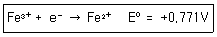
- +0. 712
- +0. 742
- +0. 801
- +0. 830
(정답률: 62%)
65. 크로마토그래피에서 단 높이(Plate Height)에 대한 설명으로 옳지 않은 것은?
- 단 높이가 낮으면 띠나비(bandwidth)는 좁아진다.
- 이론 단 하나의 높이(height equivalent to a theoretical plate) 라고도 불린다.
- 단 높이가 감소하면 단의 개수는 증가한다.
- 단 높이가 감소하면 분리가 잘 되지 않는다.
(정답률: 59%)
66. 분자질량분석법에서는 동위원소의 존재비를 이용하여 M+1봉우리를 계산하여 분자량 봉우리를 확인한다. 원소에 대한 존재비율 중 잘못된 것은?
- 탄소-13 : 1.08%
- 수소-2 : 0.15%
- 질소-15 : 0.37%
- 산소-18 : 0.20%
(정답률: 62%)
67. 선택계수(selectivity coefficient, α)는 다음 중 무엇을 나타내는가?
- 두 분석 물질 간의 상대적인 이동 속도
- 분석 물질의 띠 넓어짐의 정도
- 이동상의 이동 속도
- 분석 가능한 물질의 최대수
(정답률: 76%)
68. 질량분석법에 사용되는 이온화법 중 기체상태에서 이온화 시키는 방법이 아닌 것은?
- 전자충격 이온화(EI)
- 매트릭스 지원 탈착 이온화(MALDI)
- 장 이온화(FI)
- 화학적 이온화(CI)
(정답률: 50%)
69. 크기별 배제(size exclusion)크로마토그래피에 대한 설명으로 틀린 것은?
- 분리 시간이 비교적 짧고 시료 손실이 없다.
- 이성질체와 같이 비슷한 크기의 시료의 분리에 적합한다.
- 거대 중합체나 천연불의 분자량 또는 분자량 분포를 측정할 수 있다.
- 분석불과 정지상(stationary phase)사이에 화학적, 물리적 상호작용이 일어나지 않는다.
(정답률: 66%)
70. 질량분석법에서 시료의 이온화 과정은 매우 중요하다. 전기장으로 가속시킨 전자 또는 음으로 하전된 이온을 시료 분자에 충격하면 시료 분자의 양이온을 얻을 수 있다. 2가로 하전된 이온(질량 3.32×10-26kg)을 104V의 전기장으로 가속시켜 시료분자에 충격하려한다. 다음 설명 중 틀린 것은? (단, 전자의 전하는 1.6×10-19C이다.)
- 이 이온의 운동에너지는 3.2×10-15J 이다.
- 이 이온의 속도는 1.39×104m/sec이다.
- 질량이 6.64×10-26kg인 이온을 이용하면 운동에너지는 2배가 된다.
- 같은 양의 운동에너지를 갖는다면 가장 큰 질량을 가진 이온이 가장 느린 속도를 갖는다.
(정답률: 51%)
71. 질량분석법에 대한 설명으로 틀린 것은?
- 분자이온봉우리가 미지시료의 분자량을 알려주기 때문에 구조결정에 중요하다.
- 가상의 분자 ABCD에서 BCD+는 딸-이온(daughter-ion)이다다.
- 질량 스펙트럼에서 가장 큰 봉우리의 크기를 임의로 100으로 정한 것이 기준봉우리이다.
- 질량 스펙트럼에서 분자이온보다 질량수가 큰 봉우리는 생기지 않는다.
(정답률: 83%)
72. 이온선택성 막전극이 갖추어야 할 성질로 틀린 것은?
- 약간의 전기전도도를 가져야 한다.
- 분석물 용액에 잘 용해되어야 한다.
- 분석물 이온과 선택적 반응성을 가져야 한다.
- 이온교환, 결정화 및 착물형성 등의 방법으로 분석물과 결합할 수 있어야 한다.
(정답률: 73%)
73. 분자량이 큰 글루코오스 계열의 혼합물을 분리하고자 할 때 가장 적합한 크로마토그래피는?
- 겔 투과 액체 크로마토그래피
- 이온 교환 크로마토그래피
- 분비 액체 크로마토그래피
- 흡착 액체 크로마토그래피
(정답률: 85%)
74. 열분석은 물질의 특이한 물리적 온도의 함수로 측정하는 기술이다. 열분석 종류와 측정방법을 연결한 것 중 잘못된 것은?
- 시차주사열량법(DSC)-열과 전이 및 반응온도
- 시차열분석(DTA)-전이와 반응온도
- 열무게(TGA)-크기와 점도의 변화
- 방출기체분석(EGA)-열적으로 유도된 기체생성물의 양
(정답률: 77%)
75. 유도결합플라스마질량분석법(ICPMS)에서 스펙트럼의 방해에 영향을 주지 않는 화학종은?
- 동중핵 이온(isobaric ion)
- 다원자 이온(polyatomic ion)
- 이중 하전 이온(doubly charged ion)
- 중성의 아르곤 원자(neutral argon atom)
(정답률: 73%)
76. 전기분해 시 사용되는 일정전위기(potentiostat)에 대한 설명으로 틀린 것은?
- 전기분해의 선택성을 높일 수 있다.
- 작업전극에 흐르는 전류를 일정하게 유지시키는 장치이다.
- 작업전극의 전위를 기준전극에 대해 일정하게 유지한다.
- 주로 작업전극, 기준전극, 보조전극의 3전극계를 사용한다.
(정답률: 68%)
77. 칼로멜 전극(calomel electrode)에 대한 설명으로 틀린 것은?
- 전극반응은 HgCl2(s)+2e-↔2Hg(L)+2Cl-이다.
- 염소이온과 수은의 농도에 따라 전극전위가 변한다.
- 전극의 내부 관에는 Hg, Hg2Cl2, 포화 KCl 용액이 들어 있다.
- 기준전극(reference electrode)으로 사용된다.
(정답률: 65%)
78. 원자질량 스펙트럼에서의 분광학적 방해에 해당하지 않는 것은?
- 다원자 이온 방해
- 동중핵 방해
- 비휘발성 방해
- 산화물 및 수산화물 화학종 방해
(정답률: 58%)
79. 크로마토그래피에서 물질 A와 B를 분리하기 위해 16cm 관을 사용하였다. A와 B의 머무름 시간은 각각 10분과 11분이고 이동상의 평균이동속도는 5cm/분이었다. A와 B의 밑변의 봉우리 나비가 1분과 1.1분일 때 이 관의 단높이는 얼마인가?
- 1.0×10-2cm
- 1.2×10-2cm
- 1.4×10-2cm
- 1.6×10-2cm
(정답률: 71%)
80. 전기량법 적정장치에서 반드시 필요로 하지 않는 것은?
- 기체발생장치
- 일정전류원
- 정밀한 전자시계
- 적정전지
(정답률: 67%)
2.55×1023개 × 207.2u/1개 = 5.2926×1025u
이를 그램(g)으로 변환하면 다음과 같다.
5.2926×1025u × 1.66⑤4×10-24g/u = 87.8g
따라서, 정답은 "87.8"이다.